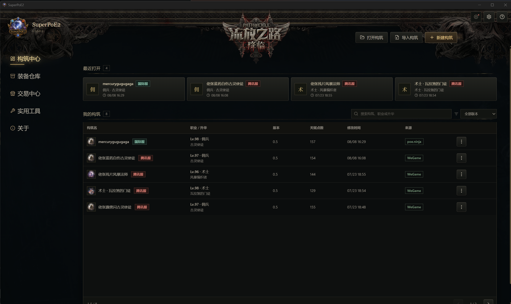
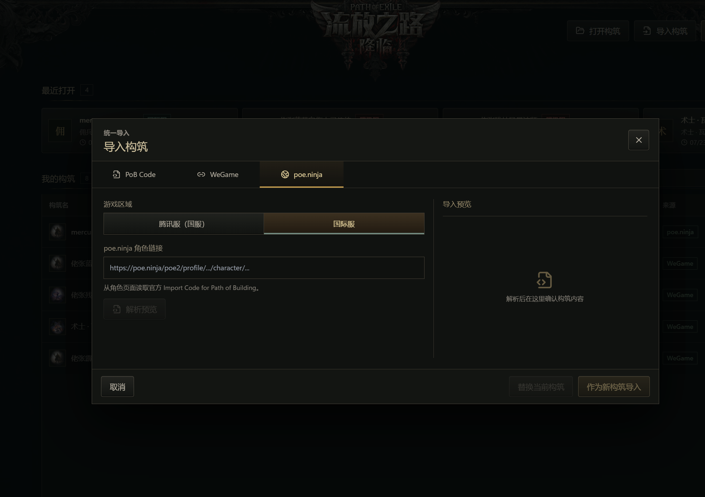
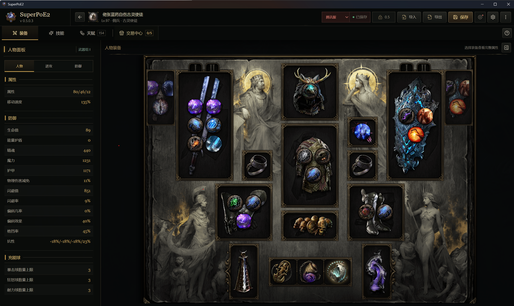
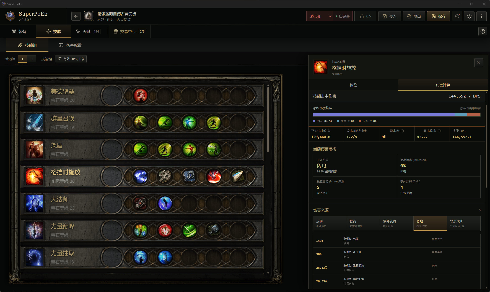
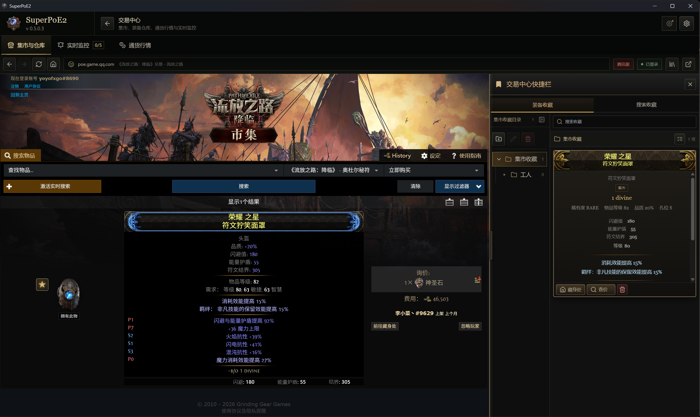
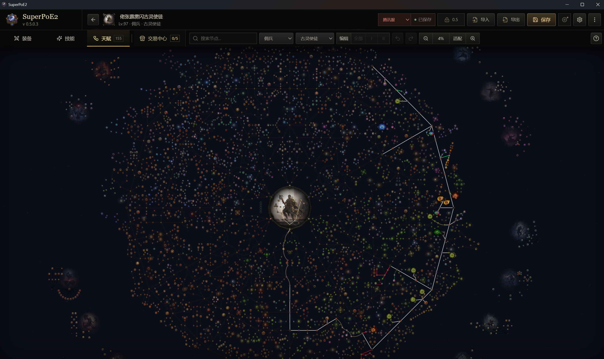
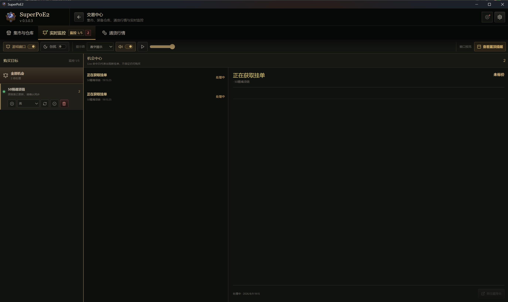
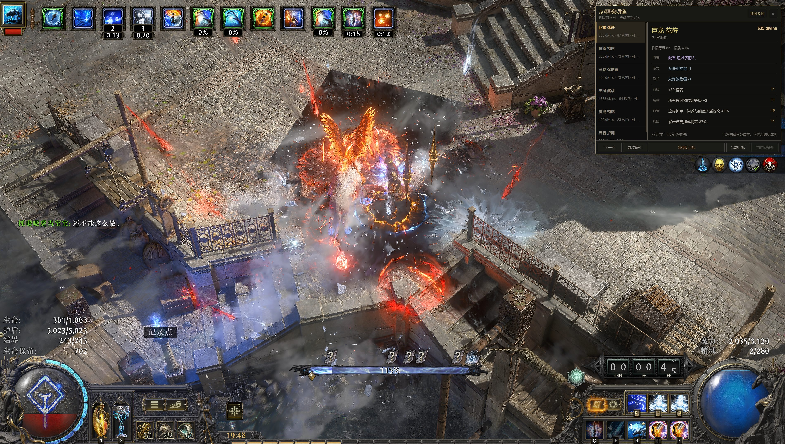
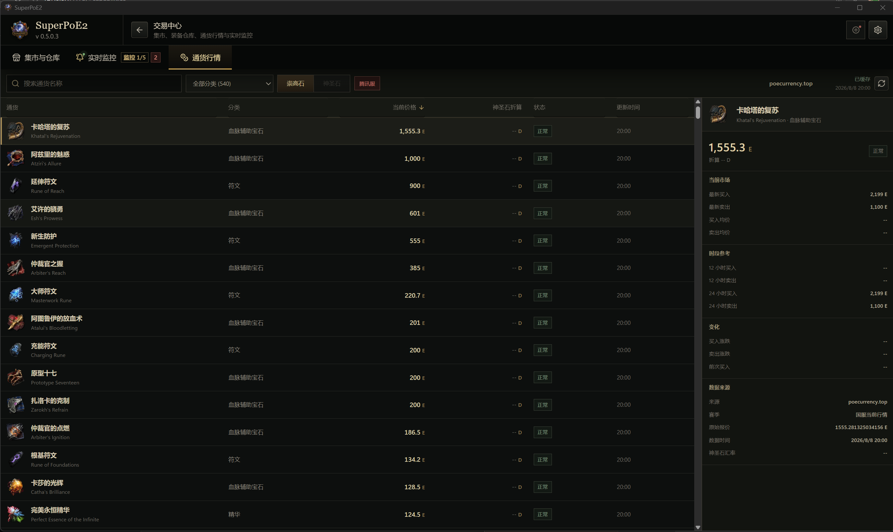
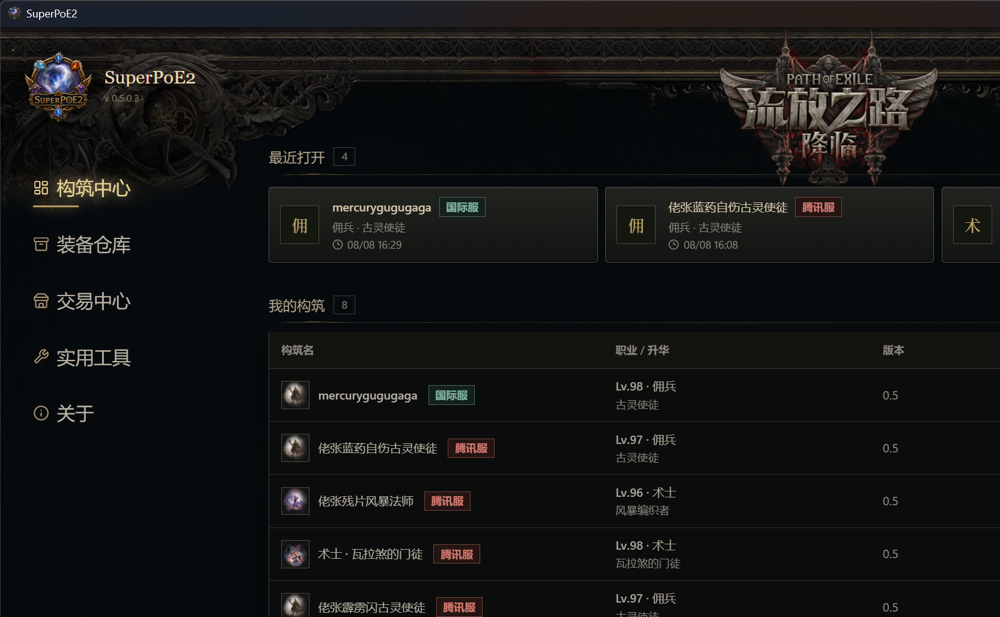

01 / BUILD
构筑中心与导入构筑
目录化管理本地构筑。导入 PoB Code、WeGame 分享或 poe.ninja 角色，保留来源，随时回到上一次决定。
- 最近打开与我的构筑
- 导入预览，确认后替换或新建
- 武器组、天赋与配置同步


SuperPoE2 把 PoB2 计算、装备分析、技能 DPS 与集市工作流放在同一个安静、快速的桌面工作台里。
装备、技能、天赋和配置不再是分散的页面。每一次调整都能回到同一个构筑对象，给出可追溯的计算结果。
了解完整工作流 →目录化管理本地构筑。导入 PoB Code、WeGame 分享或 poe.ninja 角色，保留来源，随时回到上一次决定。



EQUIPMENT / LIVE
SKILL / DPS
MARKET / SEARCH
PASSIVES / TREE

GAME / BUY
MARKET / CURRENCY核心数据保存在本地。PoB2 LuaJIT sidecar 优先常驻运行，构筑文件、设置和备份都能明确找到。
SuperPoE2 把重复的核对工作交给计算，把关键的选择留给你。
PoB Code、WeGame 分享或本地构筑文件。
装备、天赋、技能与配置进入同一对象。
PoB2 LuaJIT 运行时给出可复核结果。
比较升级方向，或直接去集市寻找它。
真实运行界面，不是营销模型。每一处数据都来自当前构筑和对应的 PoB2 计算语义。

LIVE BUILD CENTER